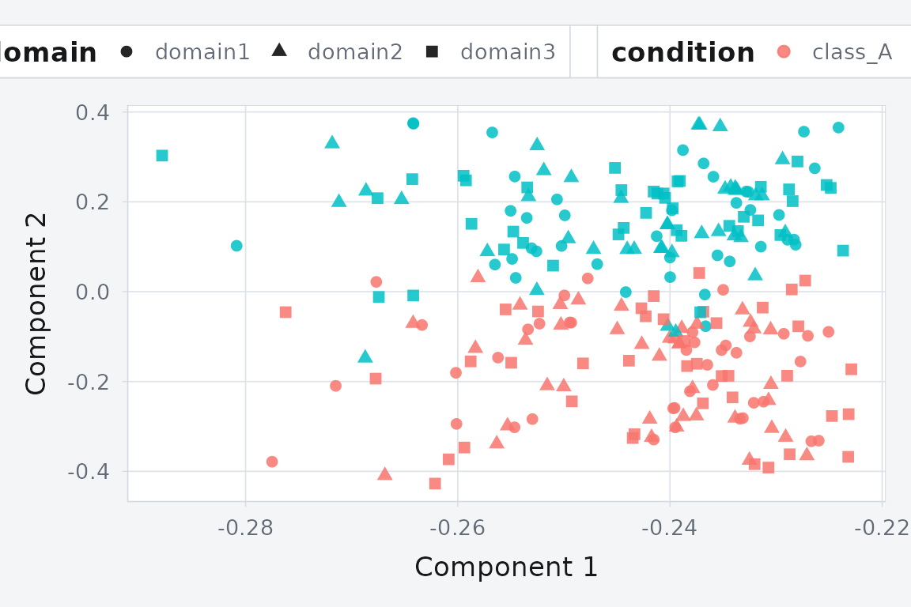
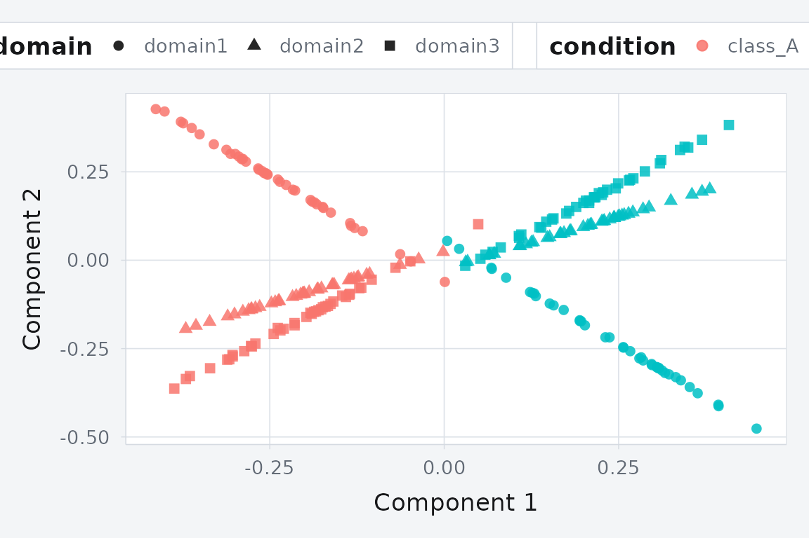

Quickstart: Building a hyperdesign and running alignments
Source:vignettes/quickstart-hyperdesign.Rmd
quickstart-hyperdesign.RmdYou have data from multiple sources — different instruments, subjects, or conditions — and you want to project them into a shared space where samples from the same class land near each other regardless of origin. That is what manifoldalign does.
This vignette gets you from raw matrices to an aligned embedding in under a minute.
Create a hyperdesign
A hyperdesign is the multi-domain container that every
alignment function in the package accepts. You build one from a list of
data matrices plus their associated design metadata.
We will use the built-in alignment_benchmark dataset,
which provides three domains with two latent classes and moderate
domain-specific transformations.
bench <- manifoldalign::alignment_benchmark
domain_list <- lapply(bench$domains, function(dom) {
multidesign(dom$x, dom$design)
})
hd <- hyperdesign(domain_list)
hd
#>
#> === Hyperdesign Object ===
#>
#> Number of blocks: 3
#>
#> +- Block 1 (domain1) -----------------
#> | Dimensions: 80 x 4
#> | Design Variables: id, condition, domain
#> | Design Structure:
#> | * id: 80 levels (1, 2, 3...79, 80)
#> | * condition: 2 levels (class_A, class_B)
#> | * domain: 1 levels (domain1)
#> | Column Design: Present
#> | Variables: .index
#>
#> +- Block 2 (domain2) -----------------
#> | Dimensions: 80 x 4
#> | Design Variables: id, condition, domain
#> | Design Structure:
#> | * id: 80 levels (1, 2, 3...79, 80)
#> | * condition: 2 levels (class_A, class_B)
#> | * domain: 1 levels (domain2)
#> | Column Design: Present
#> | Variables: .index
#>
#> +- Block 3 (domain3) -----------------
#> | Dimensions: 80 x 4
#> | Design Variables: id, condition, domain
#> | Design Structure:
#> | * id: 80 levels (1, 2, 3...79, 80)
#> | * condition: 2 levels (class_A, class_B)
#> | * domain: 1 levels (domain3)
#> | Column Design: Present
#> | Variables: .index
#>
#> =======================
#> Each domain has 80 samples and its own feature dimensionality. The
condition column in each design frame holds the class
labels.
Align with KEMA
kema() projects all domains into a shared latent space
using kernel manifold alignment. Pass the label column via
y so the algorithm can build within- and between-class
graphs.
kema_fit <- kema(
hd,
y = condition,
ncomp = 2,
knn = 3,
sigma = 0.8,
solver = "regression",
preproc = multivarious::pass()
)The result contains aligned scores for all domains stacked row-wise.

KEMA projects three domains into a shared 2D space. Points from the same class cluster together despite originating from different domains.
Classes separate cleanly, and the three domains overlap — alignment is working.
Align with GPCA
gpca_align() takes the same hyperdesign and produces a
linear (non-kernel) shared embedding. It is faster than KEMA on large
datasets where kernel matrices become expensive.
gpca_fit <- gpca_align(
hd,
y = condition,
ncomp = 2,
preproc = replicate(length(domain_list), multivarious::pass(), simplify = FALSE)
)
GPCA alignment: a linear alternative that scales better to high-dimensional data.
Building a hyperdesign from scratch
If you don’t have a packaged dataset, build one from plain matrices:
set.seed(42)
X1 <- matrix(rnorm(80 * 5), 80, 5)
X2 <- matrix(rnorm(80 * 3), 80, 3)
labels <- rep(c("A", "B"), each = 40)
hd_custom <- as_hyperdesign(
list(X1, X2),
labels = list(labels, labels),
label_name = "condition",
domain_names = c("source", "target")
)
hd_custom
#>
#> === Hyperdesign Object ===
#>
#> Number of blocks: 2
#>
#> +- Block 1 (source) -----------------
#> | Dimensions: 80 x 5
#> | Design Variables: condition
#> | Design Structure:
#> | * condition: 2 levels (A, B)
#>
#> +- Block 2 (target) -----------------
#> | Dimensions: 80 x 3
#> | Design Variables: condition
#> | Design Structure:
#> | * condition: 2 levels (A, B)
#>
#> =======================
#> This hyperdesign works with every alignment function in
the package.
What’s next?
Each alignment method has its own vignette with deeper examples:
-
vignette("kema-overview")— full/regression/scalable KEMA solvers -
vignette("gpca-align")— graph sparsification and label balancing -
vignette("cone-align")— unsupervised graph alignment -
vignette("parrot-align")— optimal transport with anchors -
vignette("fpgw_tutorial")— fused partial Gromov-Wasserstein -
vignette("performance-overview")— method comparison table